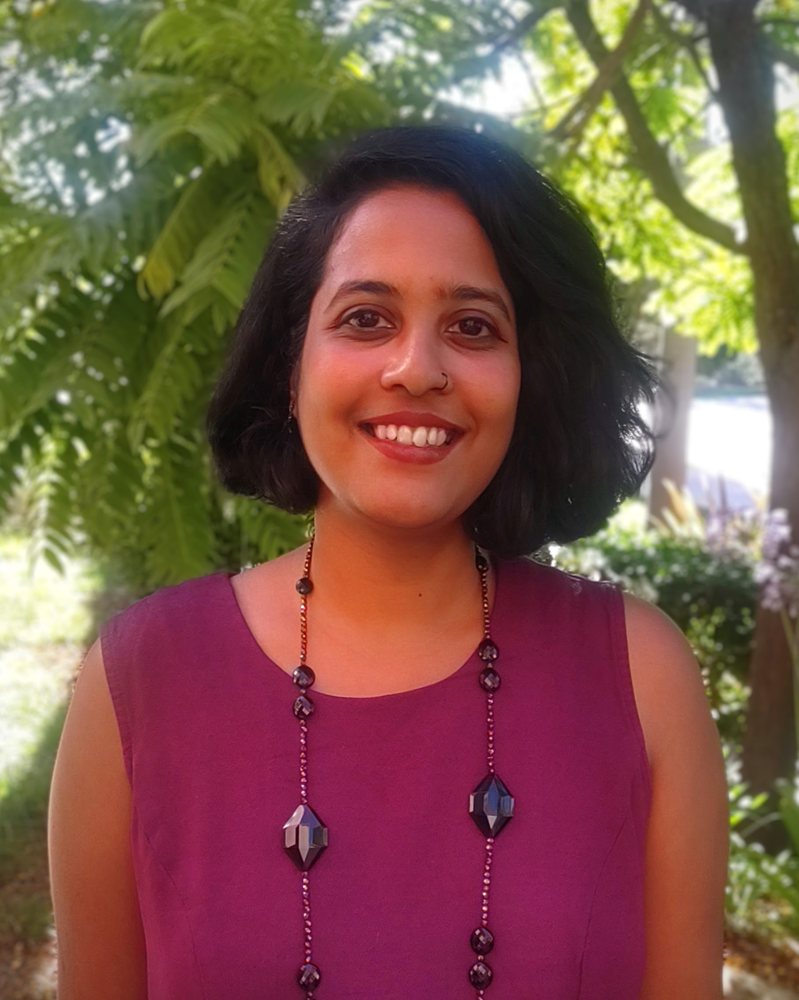

Sindhujha (Sindhu) Kumaran
Postdoctoral Scholar, Department of Physics & Astronomy, University of California, Irvine

Hi! I am an experimental particle physicist. Neutrinos are the second most abundant particles in the Universe, yet we know surprisingly little about them due to their notoriously introverted nature. Tens of billions pass through your fingertip every second, and you won't feel a thing!
I currently work on two large international neutrino experiments, JUNO in China and DUNE in the US, to find out what neutrinos can tell us about the Universe.
The nomadic nature of academic life has taken me across three continents. I grew up in India, where I did my bachelor's in physics. I then moved to Germany for my master's and PhD, where I studied neutrinos from the Sun and the Earth with the Borexino experiment, before moving to Southern California in 2022.
When I am not busy catching neutrinos, I am usually dancing (Lindy Hop, Balboa, Blues), painting, or discussing socio-political issues with friends. I am also passionate about sustainability and animal welfare. Since I grew up in a culture that takes delicious food very seriously, I spend a fair amount of my time in the kitchen veganizing recipes (e.g. making my own vegan butter that can withstand high temperatures).
Education
- PhD in Physics, 2022
RWTH Aachen University and Forschungszentrum Jülich, Germany - MSc in Physics, 2018
RWTH Aachen University and Forschungszentrum Jülich, Germany - BSc in Physics, 2016
Stella Maris College, Chennai, India